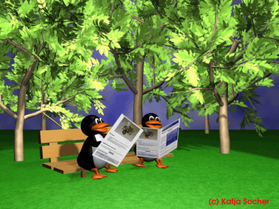

Las patentes en general son una muy mala idea porque promueven los monopolios y bloquean el progreso económico. En otras palabras pueden ser buenas para algunas personas pero muy malas para la sociedad en su conjunto.
Asi que, ¿por qué tenemos patentes?, la respuesta es sencilla: los gobiernos y las oficinas de patentes hacen una gran cantidad de dinero en poco tiempo. Por supuesto mucho más dinero sería hecho a largo plazo sin las patentes, pero algunos dólares que van directamente a los bolsillos de unos cuantos siempre son más atractivos que millones a través de muchos años.
Un buen ejemplo de cómo un entorno libre de patentes puede promover los negocios es la Internet. Si TCP/IP fuera patentada, entonces tu computadora en casa no sería capaz de acceder a la red y por supuesto, Internet no existiría.
La situación en Europa era que los "métodos matemáticos, métodos para hacer negocio y los programas de computadora eran invenciones no patentables". Esto puede cambiar. Las patentes de software son especialmente malas porque se refieren a las ideas. Las ideas son muy amplias en general; así que si existe un tipo de patente referente a una forma o diseño de una ala de avión tu podrías patentar "cualquier cosa que vuele". Con esto conseguirías bloquear completamente las tecnologías y cosas que ni siquiera has soñado al momento de obtener esa patente.
Debemos bloquear definitivamente una situación similar. De otra manera te encontrarás en peligro de ser perseguido por publicar textos o software que tú mismo escribiste. Para incrementar la atención en este tema mucho sitios se mantienen cerrados por sus propietarios. ¡ünete a la protesta y cierra tu sitio!
{kind=link}